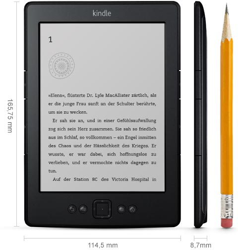

WLAN, 15 cm (6 Zoll) E Ink Display
EUR 49,00 statt EUR 69,00
Kostenlose Lieferung mit Amazon Prime.
|  | Display | 15 cm (6 Zoll) E Ink-Display, optimiert mit geschützter Waveform- und Font-Technologie, Auflösung von 600 x 800 Pixel bei 167 dpi, 16 Graustufen |
| Abmessungen | 166 mm x 114 mm x 8,7 mm | |
| Gewicht | 170 Gramm | |
| Systemanforderungen | Keine, der eReader funktioniert drahtlos und benötigt keinen Computer | |
| Geräte-Speicher | Speichert bis zu 1.400 Bücher und hat 2 GB internen Speicher (ca. 1,25 GB stehen für Nutzerinhalte zur Verfügung) | |
| Cloud-Speicher | Unbegrenzt für Amazon-Inhalte | |
| Akku-Laufzeit | Ein vollständig aufgeladener Akku hält bei ausgeschalteter WLAN-Funktion bis zu einem Monat, wenn Sie täglich bis zu einer halben Stunde lesen. | |
| Ladezeit | Lässt sich mithilfe des mitgelieferten USB 2.0 Kabels über einen Computer in 3 Stunden voll aufladen. | |
| WLAN | Unterstützt öffentliche und private WLAN-Netzwerke und Hotspots, die einen folgender Standards nutzen: 802.11b, 802.11g oder 802.11n (im b- oder g- Kompatibilitätsmodus). Kindle unterstützt die Sicherheitstechnologien WEP, WPA und WPA2 mit Kennwortauthentifizierung; er verbindet sich nicht mit WPA- und WPA2-gesicherten Netzwerken mit 802.1X Authentifizierungsmethoden; unterstützt keine Ad-hoc- (oder Peer-to-Peer) WLAN-Netzwerke. | |
| USB-Anschluss | USB 2.0 (Micro-B USB) | |
| Unterstützte Formate | Kindle (AZW), TXT, PDF, ungeschützte MOBI, PRC nativ; HTML, DOC, DOCX, JPEG, GIF, PNG, BMP nach Konvertierung. | |
| Dokumentation | Kurzanleitung (im Lieferumfang enthalten); Kindle Benutzerhandbuch (auf dem eReader vorinstalliert). Weitere Informationen sind online erhältlich. |